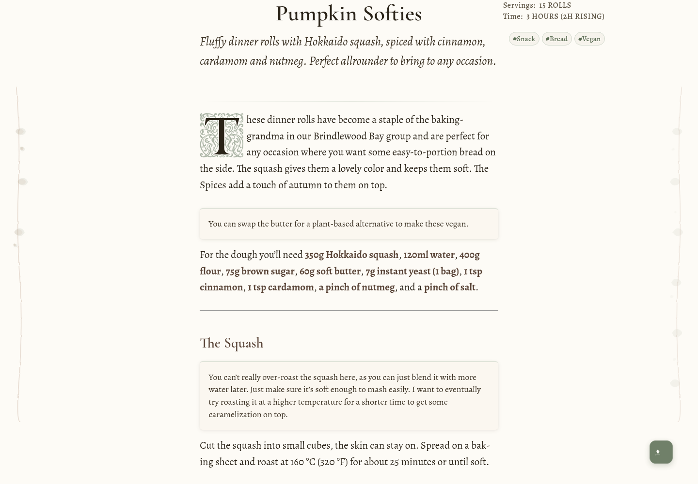
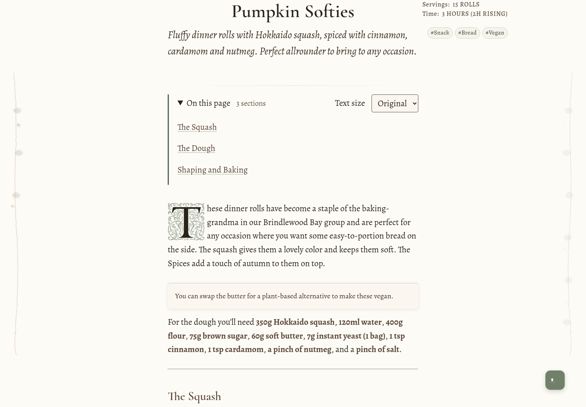

A little more room to read.
A selection from PRs #6 and #7: find a section, choose a comfortable text size, and return to the collection. The Grotto you already have, with a few useful reading tools.
The article starts below the introduction.

Contents open on request; text size belongs beside the article.

Actual builds of main and this proposal, aligned at the recipe title. Contents are shown expanded for comparison; they start closed.
My recommendation
Keep: contents, collection links, text size, local project logos, unique divider IDs, and the duplicate-copy-button guard.
Save separately: the Quarto publishing pipeline, broader card/homepage redesign, and unpublished research and articles.
Leave out: swipe navigation, a fixed reading meter, animated lighting, and superseded migration changes.
Try-page links use the local preview on port 4322. Screenshots work without a server. Both old PRs remain open for your decision.